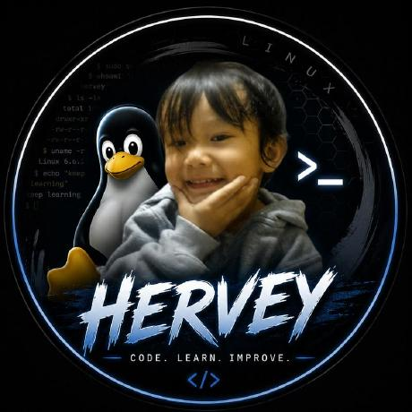
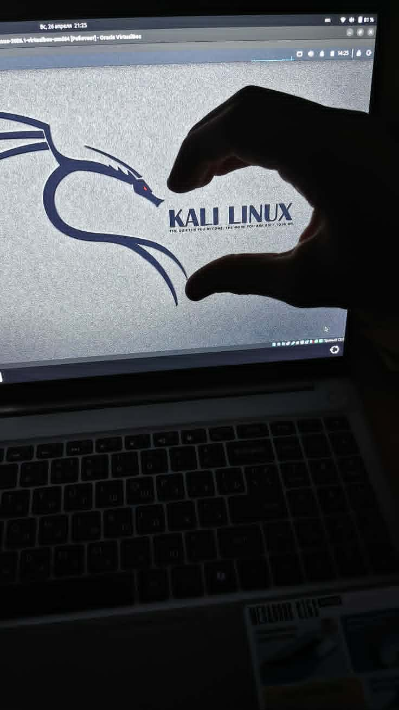

Websites with a point of view
I am interested in how HTML, CSS, and JavaScript can make a website feel specific to the person behind it.
Building withPersonal portfolio / still learning
I am a student interested in technology, and I learn best by building things. Websites, small experiments, Linux setups, code that breaks, and the work of figuring out why.
About

I am 15, a student at Tamugan National High School from Davao City, Philippines, exploring how technology works by making things with it.
I am still learning, experimenting with projects, and following the questions that come up along the way. How does a system fit together? What happens underneath the interface? Can I make this clearer, faster, or more useful?
Small experiments are where I turn an idea into something I can actually inspect, change, and understand.
Linux, computer systems, hardware, software, and cybersecurity concepts all give me different ways to ask better questions.
This site is a snapshot of what I am exploring now, not a claim that I have finished learning.
I am part of DEVCHRONICLE, a community focused on technology, cybersecurity learning, and legal activities. It is not openly recruiting members right now, but genuinely interested people can contact me directly.
Currently exploring
I am interested in how HTML, CSS, and JavaScript can make a website feel specific to the person behind it.
Building withLinux, computer systems, hardware, and software give me more ways to understand what a computer is doing.
ExploringI am learning about cybersecurity and pentesting concepts with attention to how systems can be examined responsibly.
LearningBasic game development and Pygame let me practice logic, feedback, and interaction in a different kind of environment.
ExperimentingHow I learn
I learn best when an idea becomes something I can run, inspect, change, and try again.

What should this do? What am I trying to understand?
I work with the tools I know and give the idea a shape.
I test what I made, notice what feels wrong, and follow the cause.
The next improvement usually starts with a better question.
Interests
Select an area to see what I am drawn to within it.
I enjoy the mix of structure, visual detail, and interaction that comes with building for the web. HTML, CSS, and JavaScript are a practical way to turn a thought into something other people can use.
Toolkit
Not a leaderboard. Just a living list of technologies I have worked with or explored.
Select a technology to see a little more.
Selected work
A small collection is better than a crowded shelf. More experiments will appear as they become real enough to share.
ERROR: MEMORY_NOT_FOUND
Personal website / experiment
A project shaped by nostalgic internet culture, Nokia-era technology, vintage cameras, 2000s aesthetics, emo and grunge references, archived memories, and old-school digital culture.
Nostalgic internet culture, older web culture, Nokia-era technology, vintage cameras, 2000s aesthetics, emo and grunge references, and archived memories.
HTML, CSS, and JavaScript, with the project shaped through visual experimentation and interaction.
A personal project that represents one direction I have explored. More work can join it when there is something real to share.
GitHub
My GitHub is where projects, experiments, and unfinished thoughts can be found as they develop.
Open GitHubContact
If you want to get in touch, email is the best place to start. You can also find me on GitHub, Facebook, and Telegram.
herveyjamestemple@gmail.comgithub.com/herveyjamestemple-max